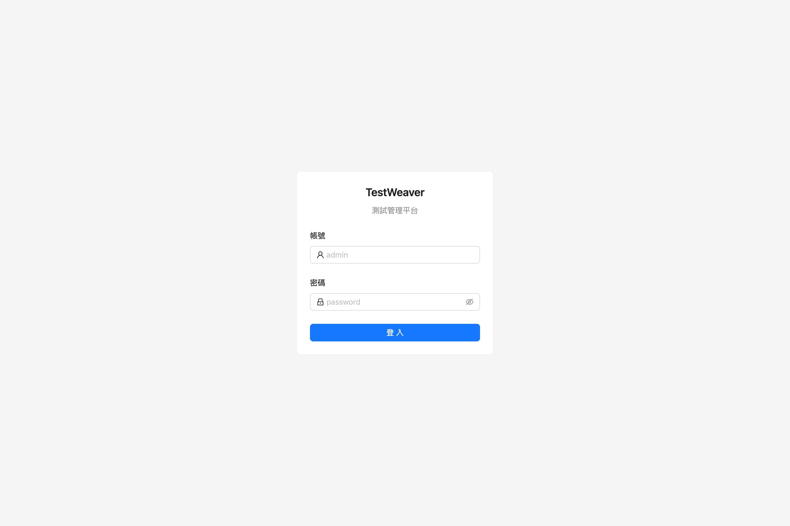
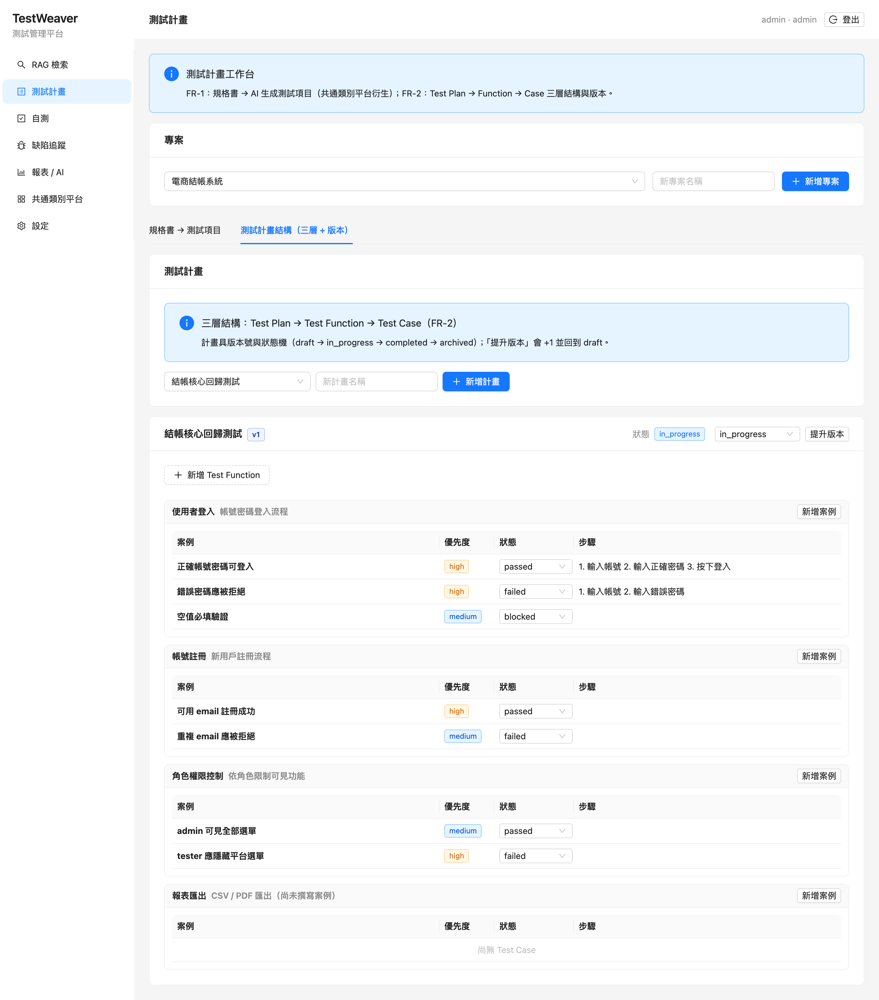
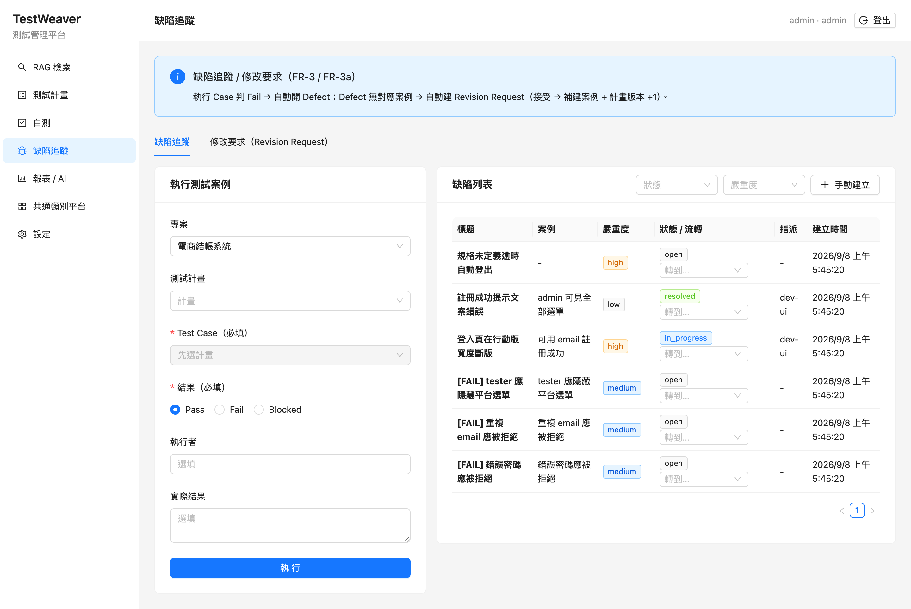
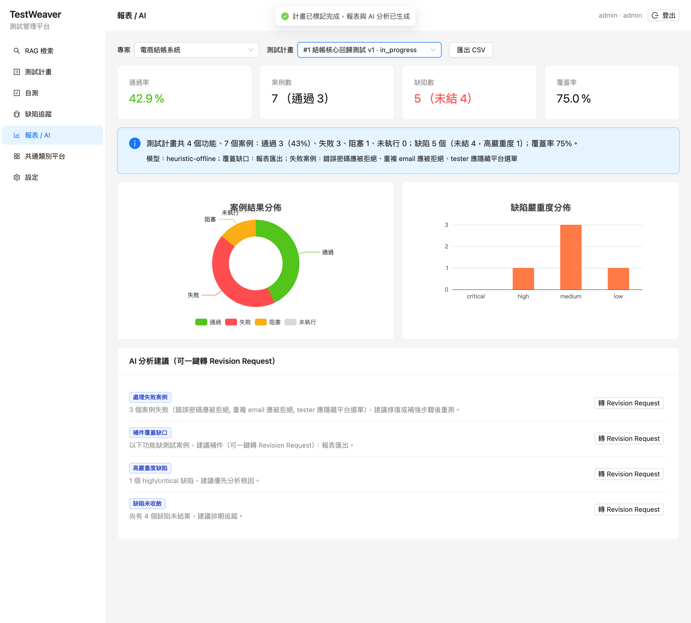

它解決什麼問題
- 規格書要人工拆成測試項目，慢、易漏、難追溯。
- 測試計畫、開發自測、缺陷分散在各處，沒人說得清「測了什麼、誰測的、還差什麼」。
- 出錯後要改測試計畫（補件），沒有正式流程，容易遺漏。
- 缺乏統一報表與權限分級，管理層看不到全貌。
五大能力
📄
自動生成項目
上傳規格書，AI 抽出「該測什麼」並對應共通類別。
🗂️
三層計畫+自測
計畫→功能→案例，可看版本；自測綁定到具體案例。
🐞
自動轉缺陷/補件
失敗自動開缺陷；無對應案例的缺陷自動建補件請求。
📊
報表+AI 分析
完成即出圖表與 AI 建議，一鍵轉成補件請求。
怎麼運作
上傳規格書→
AI 生成測試項目→
組建計畫並執行 / 自測→
失敗自動開缺陷與補件→
完成出報表 + AI 分析
產品畫面

登入與依角色顯示的功能選單

計畫 → 功能 → 案例，含版本

Fail→缺陷、自動 Revision Request

ECharts 圖表 + AI 建議
對組織的好處
⚡ 更快測試項目由 AI 起稿，人工只需審定
🧩 不漏缺陷與補件自動串接、有正式流程
🔍 可查結果對應到人與案例，操作全程有稽核
🛡️ 可控按角色分配權限，敏感操作只有管理員能做
目前狀態
✅ 已交付 · 已通過測試 · 可上線
- 具備完整登入與角色權限（預設管理員帳號，上線前更換）。
- 「測試管理、開發自測、缺陷追蹤」在同一個平台完成。
- 有稽核日誌，可追溯誰在何時做了什麼。
接下來可做（依優先序）
- 接上團隊實際使用的 AI 模型與既有資料，產出更貼合的分析。
- 依部門角色細化權限與審批流程。
- 開放更多使用者帳號、依團隊配置角色，並正式啟用稽核日誌。